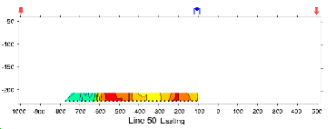

| Figure 11. Although the result is not a "real" section at all, data can be inverted as for any other pseudosection to provide a more legitimate estimate of the true Earth resistivity structure. This example shows data gathered over the San Nicolas deposit in Mexico. |  |